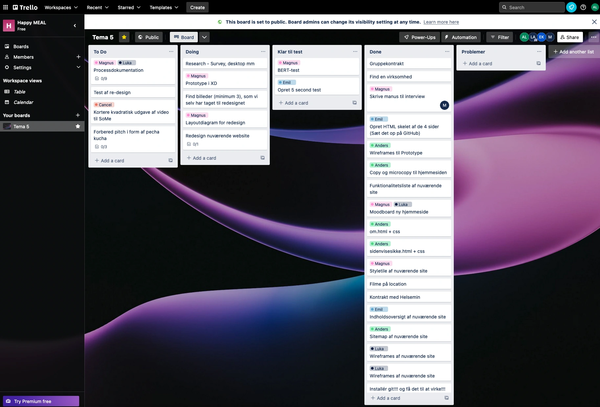
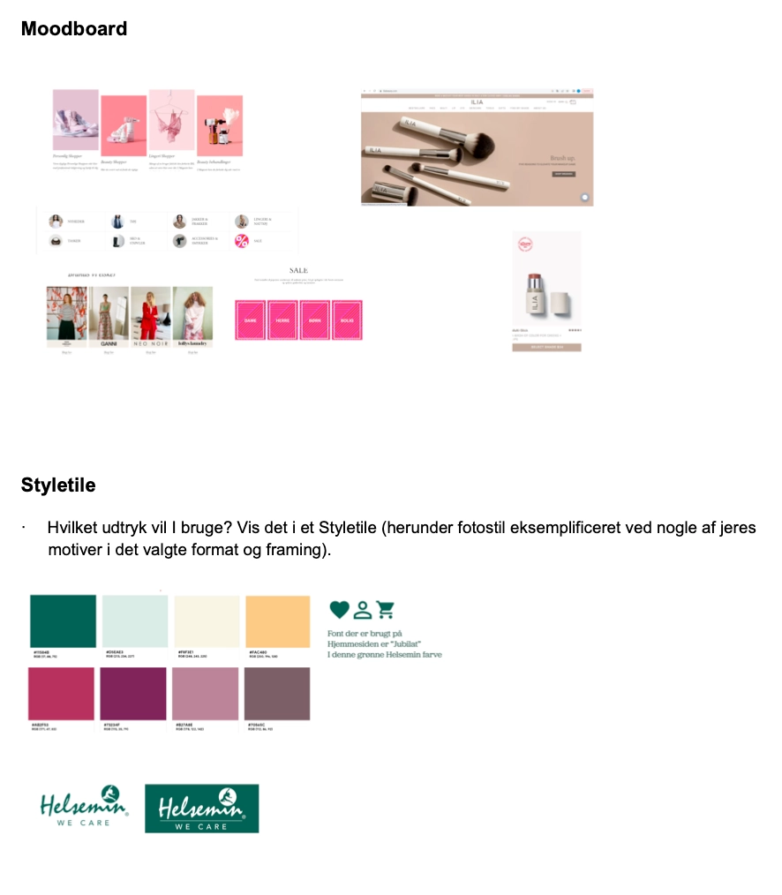
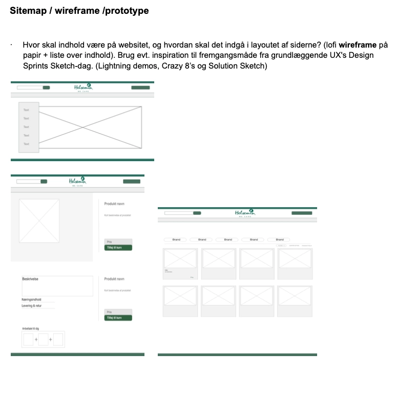
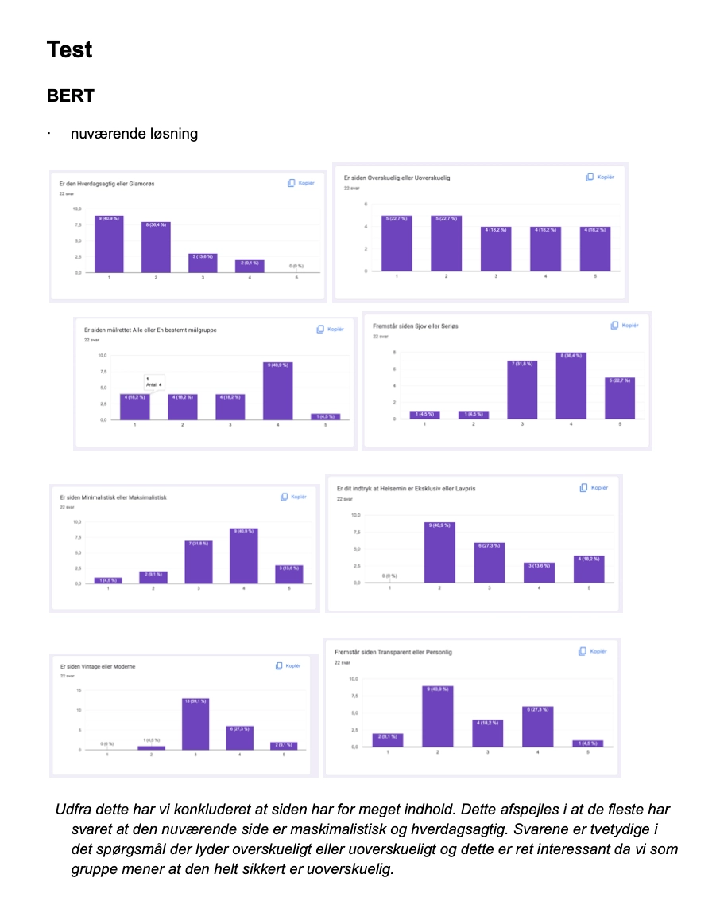

Basic Content
Process
Som gruppe
Som gruppe aftale vi løbende fysiske og online møder, hvor vi diskuterede og gennemgik det arbejde, som vi havade lavet op til mødet og det arbejde vi skullet lave efterfølgende. Vi havde hver især haft egne arbejdsopgaver, som vv sammen har gennemgik efterfølgende. Som noget af det første planlagde vi en dag, hvor vi ville filme og interviewe en medarbejder på virksomhedens fysiske lokation. Efterfølgende havde vi arbejdet gennem vores Trello Board, som gav et godt overblik over projektets opgave, samt hvor langt vi var med de enkelte arbejdsopgaver. Udover arbejdet i skoletiden, aftalte vi også fysisk gruppearbejde på skolen, for at arbejde og hjælpe hinanden med enkelte arbejdsopgaver. Her fik vi sat punktum ved mange af opgaverne og sikret, at alle var inde over de endelige beslutninger i forhold til redesignet.
  Vi lavede to test for at undersøge brugernes opfattelse af det eksisterende site.
5-sec test Video lavet til Helsemin redesign
Refleksion
Som gruppe
Hvad ville vi evt. have gjort anderledes: - Vi ville gerne have forstået og fået installeret Git/Github hurtigere, så vi nemmere og hurtigere kunne komme igang med at kode og dele vores kodninger med hinanden. Git har generelt været en udfordring, da det har fungeret forskelligt hos alle gruppens medlemmer. Derfor er vi kommet sent i gang og oplever stadig udfordringer med github, da det ikke altid committer eller synkroniserer.
Refleksion sitet: - Vi ville have udviklet et mere responsivt site, samt haft media curires på sitet, så den også fungerer til både tablet og smartphone. Derudover ville vi gerne have gået mere i dybden med designet, samt have codet en side til “check out/kurv”. - Vi ville, hvis tiden havde været til det, anvendt javascript til at gøre brugeroplevelsen på sitet endnu bedre. - Designet er heller ikke blevet så moderne og ekslusivt, som vi gerne ville have det, og det minder nok lidt for meget om stilen på det forrige design. Hvad kan det nye site bedre end det gamle? Hvilke testresultater har påvirket redesignløsningen. Og hvordan? Hvad ville vi evt. have gjort anderledes.
Det originale design af Helsemins hjemmeside blev opfattet rodet og som et lavprisbrand ift. Vores Bert-Test - vi har i den forbindelse forsøgt at gøre siden mere eksklusivt og mindre rodet, ved et mere minimalistisk design. - Flere brugere følte også at siden lignede en kosmetik forretning og ikke en helsekostforretning. Vi ville derfor gøre det mere tydeligt, at butikken ikke udelukkende solgte kosmetiske produkter, men også en lang række andre produkter.
Refleksion videoproduktionen: Hvad ville vi evt. have gjort anderledes, til en anden gang: Inden vi er ud og filme - så burde vi have sat os ned, og fundet ud af, hvad vi helt præcist vil med videoen. Når man ved, hvad man vil have ud af videoen, så kan man bedre guide et interview i den retning, og få svar på de ting og den fortælling, som man havde tænkt, at skulle have med i videoen. Samtidig kunne det også give et bedre fokus på hvilke b-roles, der skal filmes, samt hvilke spørgsmål der mere præcist burde stilles.
Min refleksion
Jeg ønskede et bedre forløb for mig selv. Jeg var ramt af sygdom i den første tid og jeg havde glædet mig til video og redigering. Jeg havde håbet på en anden fremgangsmåde, men må erkende at grundlæggende indhold blev en roddet omgang for mig. Jeg følte ikke rigtig at jeg slog igennem, og nåede aldrig et godt flow, som i de forgangne temaer.